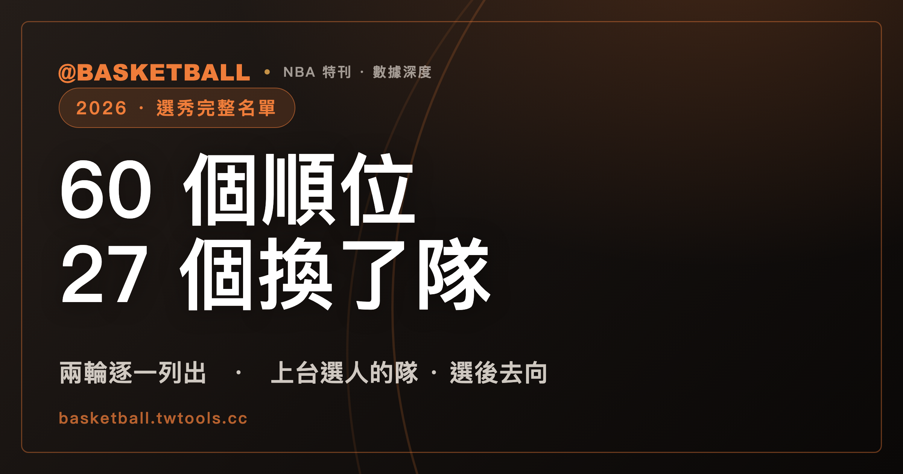

2026 NBA 選秀完整名單：60 個順位裡，27 個球員不會待在選他的那支球隊
2026 年 NBA 選秀共兩輪、60 個順位，全部完成選人，但實際上台選人的只有 28 支球隊。依 ESPN 的官方資料，60 個順位裡有 27 個在選秀後被交易，也就是說每 10 個被選中的球員就有將近 5 個不會替紀錄上選他的球隊打球。本文把兩輪名單逐順位列出，並標明每張籤的來源與選後去向，資料取源時間為 2026 年 8 月 6 日。

NBA · 2026 年選秀完整名單｜兩輪 60 個順位 · 28 隊上台選人 · 27 個順位選後易主
2026 年 NBA 選秀的官方紀錄上，第 13 順位是邁阿密熱火選的。被選中的球員叫 Nate Ament。他當晚戴的也是熱火的帽子。
但他不會替熱火打球。
NBA 官方的選秀結果頁寫得很直白，原文是「Miami Heat draft Nate Ament (Tennessee) (Traded to Milwaukee)」。前半句是誰上台選人，括號裡才是球員要去哪裡。誰選的和誰拿到，被官方寫在同一行，但不是同一件事。
同樣的落差在 2026 年這份名單上出現了 27 次。60 個被選中的球員，有 27 個不會留在紀錄上選他的那支球隊。
至於為什麼官方紀錄要這樣寫，據 Yahoo Sports 的說明，NBA 要到 7 月新聯盟年度開始之後才會正式處理選秀夜談成的交易，所以選秀當晚的官方紀錄上，持有選秀權的仍然是帳面上原本那支球隊，球員戴的帽子也是那支球隊的。這個說法出自媒體報導，不是聯盟公布的條文。
以下是 2026 年 NBA 選秀兩輪 60 個順位的完整名單。資料取自 ESPN 的官方賽事資料介面，取源時間為 2026 年 8 月 6 日，本站另抽驗其中 10 個順位對 NBA 官方選秀結果頁，球員與球隊全數相符。本文只處理選秀本身，這個休賽季的自由球員簽約與球星交易另見本站的 2026 NBA 休賽季異動總表；聯盟的分區架構與賽季節奏可參考 NBA 完全指南。
名單不評論新秀的能力或前景，因為沒有可引用的公開評分依據。台灣媒體對這批新秀目前還沒有通行的中文譯名，所以名字一律保留英文原文。
官方紀錄的主詞是上台選人的球隊
先把兩個容易混在一起的欄位分開。
「上台選人的球隊」是選秀當下實際持有該順位、走上台把名字念出來的球隊，也是 NBA 官方紀錄裡「draft」這個動詞的主詞。「選後去向」則是球員被選中之後的交易結果。
NBA 官方選秀結果頁的第 16、17 順位也是同樣的句型：「Memphis Grizzlies ... Bennett Stirtz (Iowa) (Traded to Oklahoma City)」、「Oklahoma City Thunder draft Ebuka Okorie (Stanford) (Traded to Detroit via Memphis)」。第 17 順位甚至連轉手中繼站都標出來了。
所以看這份名單時，同一列裡的兩個球隊名稱指的是兩件事。左邊那個負責選人，右邊那個才是球員報到的地方。有些報導習慣直接用「最後拿到球員的球隊」當敘事主詞，寫成「公鹿在第 13 順位選了 Nate Ament」，指涉的球員一樣，只是敘述慣例不同。下面的名單把兩件事拆成兩欄。
2026 NBA 選秀第一輪完整名單
第 1 到第 30 順位。「籤來自」與「籤原屬」的括號說明，是 ESPN 資料裡對該順位選秀權來源的註記。
| 順位 | 球員 | 位置 | 上台選人的球隊 | 選後去向 |
|---|---|---|---|---|
| 第 1 順位 | AJ Dybantsa | 前鋒 | 華盛頓巫師 | 留在選他的球隊 |
| 第 2 順位 | Darryn Peterson | 後衛 | 猶他爵士 | 留在選他的球隊 |
| 第 3 順位 | Cameron Boozer | 前鋒 | 曼菲斯灰熊 | 留在選他的球隊 |
| 第 4 順位 | Caleb Wilson | 前鋒 | 芝加哥公牛 | 留在選他的球隊 |
| 第 5 順位 | Keaton Wagler | 後衛 | 洛杉磯快艇（籤來自印第安納溜馬） | 留在選他的球隊 |
| 第 6 順位 | Mikel Brown Jr. | 後衛 | 布魯克林籃網 | 留在選他的球隊 |
| 第 7 順位 | Darius Acuff Jr. | 後衛 | 沙加緬度國王 | 留在選他的球隊 |
| 第 8 順位 | Kingston Flemings | 後衛 | 亞特蘭大老鷹（籤來自紐奧良鵜鶘） | 留在選他的球隊 |
| 第 9 順位 | Morez Johnson Jr. | 前鋒 | 達拉斯獨行俠 | 留在選他的球隊 |
| 第 10 順位 | Brayden Burries | 後衛 | 密爾瓦基公鹿 | 留在選他的球隊 |
| 第 11 順位 | Yaxel Lendeborg | 前鋒 | 金州勇士 | 留在選他的球隊 |
| 第 12 順位 | Aday Mara | 中鋒 | 奧克拉荷馬雷霆（籤來自洛杉磯快艇） | 留在選他的球隊 |
| 第 13 順位 | Nate Ament | 前鋒 | 邁阿密熱火 | 交易至密爾瓦基公鹿 |
| 第 14 順位 | Hannes Steinbach | 前鋒 | 夏洛特黃蜂 | 留在選他的球隊 |
| 第 15 順位 | Dailyn Swain | 後衛 | 芝加哥公牛（籤來自波特蘭拓荒者） | 留在選他的球隊 |
| 第 16 順位 | Bennett Stirtz | 後衛 | 曼菲斯灰熊 | 交易至奧克拉荷馬雷霆 |
| 第 17 順位 | Ebuka Okorie | 後衛 | 奧克拉荷馬雷霆 | 交易至底特律活塞（經曼菲斯灰熊） |
| 第 18 順位 | Christian Anderson Jr. | 後衛 | 夏洛特黃蜂（籤原屬奧蘭多魔術，經鳳凰城太陽轉入） | 留在選他的球隊 |
| 第 19 順位 | Allen Graves | 前鋒 | 多倫多暴龍 | 留在選他的球隊 |
| 第 20 順位 | Jayden Quaintance | 前鋒 | 聖安東尼奧馬刺（籤來自亞特蘭大老鷹） | 留在選他的球隊 |
| 第 21 順位 | Karim Lopez | 前鋒 | 底特律活塞 | 交易至曼菲斯灰熊 |
| 第 22 順位 | Labaron Philon Jr. | 後衛 | 費城 76 人（籤原屬休士頓火箭，經奧克拉荷馬雷霆轉入） | 留在選他的球隊 |
| 第 23 順位 | Zuby Ejiofor | 前鋒 | 亞特蘭大老鷹（籤來自克里夫蘭騎士） | 留在選他的球隊 |
| 第 24 順位 | Cameron Carr | 後衛 | 紐約尼克 | 交易至洛杉磯湖人 |
| 第 25 順位 | Sergio De Larrea | 後衛 | 洛杉磯湖人 | 交易至達拉斯獨行俠（經紐約尼克） |
| 第 26 順位 | Tarris Reed Jr. | 中鋒 | 丹佛金塊 | 交易至聖安東尼奧馬刺 |
| 第 27 順位 | Chris Cenac Jr. | 前鋒 | 波士頓塞爾提克 | 留在選他的球隊 |
| 第 28 順位 | Joshua Jefferson | 前鋒 | 明尼蘇達灰狼 | 交易至布魯克林籃網 |
| 第 29 順位 | Alex Karaban | 前鋒 | 克里夫蘭騎士 | 交易至沙加緬度國王 |
| 第 30 順位 | Koa Peat | 前鋒 | 達拉斯獨行俠 | 交易至鳳凰城太陽（經紐約尼克） |
第一輪 30 個順位裡，10 個順位的球員在選秀後被交易走，另有 8 個順位的選秀權本身在選秀前就已經易主。
「留在選他的球隊」的意思是 ESPN 的資料沒有替這個順位標記選後交易，不是保證球員之後不會被交易。
2026 NBA 選秀第二輪完整名單
第 31 到第 60 順位，也就是第二輪的第 1 到第 30 順位。
| 順位 | 球員 | 位置 | 上台選人的球隊 | 選後去向 |
|---|---|---|---|---|
| 第 31 順位 | Bruce Thornton | 後衛 | 紐約尼克 | 交易至休士頓火箭 |
| 第 32 順位 | Richie Saunders | 後衛 | 曼菲斯灰熊（籤原屬印第安納溜馬，經密爾瓦基公鹿轉入） | 留在選他的球隊 |
| 第 33 順位 | Isaiah Evans | 後衛 | 布魯克林籃網 | 交易至明尼蘇達灰狼 |
| 第 34 順位 | Meleek Thomas | 後衛 | 沙加緬度國王 | 交易至克里夫蘭騎士 |
| 第 35 順位 | Trevon Brazile | 前鋒 | 聖安東尼奧馬刺 | 交易至丹佛金塊 |
| 第 36 順位 | Baba Miller | 前鋒 | 洛杉磯快艇（籤原屬曼菲斯灰熊，中途多次轉手） | 留在選他的球隊 |
| 第 37 順位 | Ryan Conwell | 後衛 | 奧克拉荷馬雷霆 | 交易至邁阿密熱火 |
| 第 38 順位 | Braden Smith | 後衛 | 芝加哥公牛 | 交易至印第安納溜馬 |
| 第 39 順位 | Jack Kayil | 後衛 | 休士頓火箭 | 交易至紐約尼克 |
| 第 40 順位 | Dillon Mitchell | 前鋒 | 波士頓塞爾提克（籤原屬密爾瓦基公鹿，經奧蘭多魔術轉入） | 留在選他的球隊 |
| 第 41 順位 | Otega Oweh | 後衛 | 邁阿密熱火 | 交易至奧克拉荷馬雷霆 |
| 第 42 順位 | Ja'Kobi Gillespie | 後衛 | 聖安東尼奧馬刺（籤原屬波特蘭拓荒者，經紐奧良鵜鶘轉入） | 留在選他的球隊 |
| 第 43 順位 | Tyler Bilodeau | 前鋒 | 布魯克林籃網（籤原屬洛杉磯快艇，經休士頓火箭轉入） | 留在選他的球隊 |
| 第 44 順位 | Maliq Brown | 前鋒 | 聖安東尼奧馬刺（籤原屬邁阿密熱火，經印第安納溜馬轉入） | 留在選他的球隊 |
| 第 45 順位 | Emanuel Sharp | 後衛 | 沙加緬度國王（籤原屬夏洛特黃蜂，中途多次轉手） | 留在選他的球隊 |
| 第 46 順位 | Felix Okpara | 前鋒 | 奧蘭多魔術 | 交易至華盛頓巫師 |
| 第 47 順位 | Tyler Nickel | 前鋒 | 鳳凰城太陽 | 交易至紐約尼克 |
| 第 48 順位 | Tobi Lawal | 前鋒 | 達拉斯獨行俠（籤原屬鳳凰城太陽，經華盛頓巫師轉入） | 留在選他的球隊 |
| 第 49 順位 | Bryce Hopkins | 前鋒 | 丹佛金塊（籤原屬亞特蘭大老鷹，中途多次轉手） | 留在選他的球隊 |
| 第 50 順位 | Jaden Bradley | 後衛 | 多倫多暴龍 | 留在選他的球隊 |
| 第 51 順位 | Izaiyah Nelson | 前鋒 | 華盛頓巫師 | 交易至奧蘭多魔術 |
| 第 52 順位 | Henri Veesaar | 中鋒 | 洛杉磯快艇 | 交易至亞特蘭大老鷹 |
| 第 53 順位 | Ugonna Onyenso | 中鋒 | 休士頓火箭 | 交易至底特律活塞（經紐約尼克） |
| 第 54 順位 | Lajae Jones | 後衛 | 金州勇士（籤原屬洛杉磯湖人，中途多次轉手） | 留在選他的球隊 |
| 第 55 順位 | Nick Martinelli | 前鋒 | 紐約尼克 | 交易至洛杉磯快艇（經休士頓火箭） |
| 第 56 順位 | Vsevolod Ishchenko | 後衛 | 芝加哥公牛 | 交易至達拉斯獨行俠（經洛杉磯湖人） |
| 第 57 順位 | Narcisse Ngoy | 前鋒 | 亞特蘭大老鷹 | 交易至洛杉磯快艇 |
| 第 58 順位 | Jaron Pierre Jr. | 後衛 | 紐奧良鵜鶘（籤原屬底特律活塞，中途多次轉手） | 留在選他的球隊 |
| 第 59 順位 | Trey Kaufman-Renn | 前鋒 | 明尼蘇達灰狼（籤原屬聖安東尼奧馬刺，經印第安納溜馬轉入） | 留在選他的球隊 |
| 第 60 順位 | Malique Lewis | 前鋒 | 華盛頓巫師 | 交易至密爾瓦基公鹿（經奧蘭多魔術） |
選後易主的 27 個順位裡，第二輪佔了 17 個
把兩輪放在一起數，選後交易的分佈並不平均。
| 輪次 | 順位數 | 選後被交易 | 佔該輪比例 |
|---|---|---|---|
| 第一輪 | 30 | 10 | 33% |
| 第二輪 | 30 | 17 | 57% |
| 合計 | 60 | 27 | 45% |
第二輪的 30 個順位有 17 個在選秀後易主，超過一半。第一輪是 10 個，三分之一。
至於為什麼第二輪的交易密度比第一輪高，本文找不到聯盟或球團的公開說明可以引用，所以不推測動機，只把數字列在這裡。
還有 7 個順位的球員在交易途中經過第三支球隊，官方紀錄會寫成「交易至某隊（經某隊）」的形式，分別是第 17、25、30、53、55、56、60 順位。
交易之後，馬刺、快艇、獨行俠各握有 4 個新秀
下表是 30 支球隊在這次選秀的進出。「上台選人」是官方紀錄上實際做出選擇的次數；「交易後歸屬」是把選後交易註記算進去之後，各隊手上有幾個 2026 年的被選中球員。
| 球隊 | 上台選人 | 選後交易出去 | 交易換進 | 交易後歸屬 |
|---|---|---|---|---|
| 聖安東尼奧馬刺 | 4 | 1 | 1 | 4 |
| 洛杉磯快艇 | 3 | 1 | 2 | 4 |
| 達拉斯獨行俠 | 3 | 1 | 2 | 4 |
| 亞特蘭大老鷹 | 3 | 1 | 1 | 3 |
| 奧克拉荷馬雷霆 | 3 | 2 | 2 | 3 |
| 布魯克林籃網 | 3 | 1 | 1 | 3 |
| 曼菲斯灰熊 | 3 | 1 | 1 | 3 |
| 沙加緬度國王 | 3 | 1 | 1 | 3 |
| 密爾瓦基公鹿 | 1 | 0 | 2 | 3 |
| 芝加哥公牛 | 4 | 2 | 0 | 2 |
| 紐約尼克 | 3 | 3 | 2 | 2 |
| 華盛頓巫師 | 3 | 2 | 1 | 2 |
| 丹佛金塊 | 2 | 1 | 1 | 2 |
| 夏洛特黃蜂 | 2 | 0 | 0 | 2 |
| 多倫多暴龍 | 2 | 0 | 0 | 2 |
| 明尼蘇達灰狼 | 2 | 1 | 1 | 2 |
| 波士頓塞爾提克 | 2 | 0 | 0 | 2 |
| 金州勇士 | 2 | 0 | 0 | 2 |
| 底特律活塞 | 1 | 1 | 2 | 2 |
| 休士頓火箭 | 2 | 2 | 1 | 1 |
| 邁阿密熱火 | 2 | 2 | 1 | 1 |
| 克里夫蘭騎士 | 1 | 1 | 1 | 1 |
| 奧蘭多魔術 | 1 | 1 | 1 | 1 |
| 洛杉磯湖人 | 1 | 1 | 1 | 1 |
| 猶他爵士 | 1 | 0 | 0 | 1 |
| 紐奧良鵜鶘 | 1 | 0 | 0 | 1 |
| 費城 76 人 | 1 | 0 | 0 | 1 |
| 鳳凰城太陽 | 1 | 1 | 1 | 1 |
| 印第安納溜馬 | 0 | 0 | 1 | 1 |
| 波特蘭拓荒者 | 0 | 0 | 0 | 0 |
| 合計 | 60 | 27 | 27 | 60 |
幾個從表裡直接讀得出來的形狀。
芝加哥公牛上台選人的次數最多，4 次，和聖安東尼奧馬刺並列。但公牛把其中 2 個交易出去、一個都沒換回來，交易後手上剩 2 個；馬刺送出 1 個又換回 1 個，維持 4 個。同樣是選 4 次，結果不同。
紐約尼克是進出最頻繁的一隊。上台選了 3 次，3 個全部交易出去，另外從別隊換進 2 個。等於官方紀錄上經手 3 次、最後留下的是另外兩張臉孔。
密爾瓦基公鹿與底特律活塞走的是反方向。公鹿只上台選了 1 次，最後手上有 3 個；活塞上台 1 次、送走 1 個、換進 2 個，最後有 2 個。
30 隊裡有 2 隊完全沒有上台選人，分別是印第安納溜馬與波特蘭拓荒者。溜馬後來透過交易拿到第 38 順位的 Braden Smith，拓荒者則是在這 60 個順位的選人紀錄與交易註記裡都沒有拿到球員。要說明的是，拓荒者的名字在資料裡出現過兩次，都是以選秀權原屬球隊的身分：第 15 順位與第 42 順位的籤都來自波特蘭。
60 張籤有 47 張帶著來源或轉手註記
選秀權在 NBA 是可以交易的資產，痕跡在 2026 年這份資料上留得很清楚。
60 個順位裡，有 47 個帶著 ESPN 標注的註記，只有 13 個順位是乾淨的：沒有來源註記，也沒有選後交易。13 個之中有 12 個在第一輪，第二輪只有第 50 順位。
47 個註記可以分成兩類：
| 註記類型 | 意思 | 順位數 |
|---|---|---|
| 選後交易（Traded to） | 球員被選中之後才被交易 | 27 |
| 籤的來源（via／from） | 這張籤在選秀前就已經換過球隊 | 20 |
| 無註記 | 球隊用自己的籤選人，選後也沒有交易 | 13 |
第二類註記說的是選秀權自己的移動歷史，跟誰選了誰無關。舉例來說，第 5 順位是洛杉磯快艇上台選的，但那張籤原本屬於印第安納溜馬；第 12 順位由奧克拉荷馬雷霆使用，籤來自洛杉磯快艇。這兩張籤在選秀開始之前就已經換手完成。
有幾個順位的註記列出三支以上球隊組成的轉手鏈。這些長鏈條在 NBA 官方選秀結果頁與官方休賽季交易追蹤頁上都找不到對應紀錄，官方那份選秀結果的體例只記選秀日當天發生的交易，選秀前跨年度累積的轉手不會出現。基於這個緣故，上面兩張名單表只保留註記裡的原屬球隊，中間過程寫成「中途多次轉手」，不逐段展開。
位置分佈：前鋒 29 人、後衛 27 人、中鋒 4 人
| 位置 | 人數 | 第一輪 | 第二輪 |
|---|---|---|---|
| 前鋒（F） | 29 | 15 | 14 |
| 後衛（G） | 27 | 13 | 14 |
| 中鋒（C） | 4 | 2 | 2 |
| 合計 | 60 | 30 | 30 |
這份位置標註來自 ESPN 的資料欄位，只分前鋒、後衛、中鋒三類，沒有再細分控球後衛、得分後衛、大前鋒、小前鋒。同一名球員在不同資料來源可能被標成不同位置，這一欄適合當作粗略的結構參考，不適合拿來做細部的陣容分析。
比較明確的一點是中鋒只有 4 人，兩輪各 2 人：第 12 順位的 Aday Mara、第 26 順位的 Tarris Reed Jr.、第 52 順位的 Henri Veesaar、第 53 順位的 Ugonna Onyenso。
選秀資料裡查不到的四件事
寫這篇整理時，有四項讀者可能會想知道、但目前拿不到可靠來源的資訊，一併列出來。
新秀的能力評價與順位合理性。本站沒有可引用的公開評分依據，所以不做任何「選得好不好」「哪一隊撿到便宜」的判斷。
球員的出生地與國籍。ESPN 資料裡的出生地欄位，這 60 筆全部是空的，因此本文沒有任何國籍分佈的統計。
長轉手鏈的逐段過程。如上一節所述，官方選秀結果頁與官方交易追蹤頁都沒有這些鏈條的紀錄，本文只寫到原屬球隊為止。
2026-27 賽季的開幕日期。多家媒體預期開幕夜落在 2026 年 10 月 20 日，完整賽程表可能在 8 月中旬公布，但截至 2026 年 8 月 6 日，NBA 官方網站的賽程頁上沒有任何日期確認，聯盟也還沒發布相關公告。這兩個日期目前只有媒體預期的層級。
常見問題
2026 年 NBA 選秀的第 1 順位是誰？
華盛頓巫師在第 1 順位選了 AJ Dybantsa，位置是前鋒。ESPN 的資料沒有替這個順位標記選後交易，也就是說他留在選他的球隊。第 2 順位是猶他爵士選的 Darryn Peterson（後衛），第 3 順位是曼菲斯灰熊選的 Cameron Boozer（前鋒）。
2026 年選秀一共有幾個順位？
兩輪、60 個順位，每輪 30 個，全部完成選人。不過實際上台選人的球隊只有 28 支，印第安納溜馬與波特蘭拓荒者這次沒有做出任何選擇，因為兩隊的籤在選秀前就已經交易出去。
為什麼有球員戴著 A 隊的帽子，卻要去 B 隊報到？
因為官方紀錄上做出選擇的球隊，與球員最後報到的球隊，在選秀當晚是分開的兩件事。以第 13 順位的 Nate Ament 為例，NBA 官方選秀結果頁的寫法是邁阿密熱火選了他、後面括號標註被交易到密爾瓦基。據 Yahoo Sports 的說明，NBA 要到 7 月新聯盟年度開始之後才正式處理選秀夜的交易，所以選秀當晚帳面上持有選秀權的仍是熱火，球員拿到的帽子也是熱火的。這個程序說明來自媒體報導，並非聯盟公布的條文。
2026 年選秀哪一隊拿到最多新秀？
把選後交易算進去之後，聖安東尼奧馬刺、洛杉磯快艇、達拉斯獨行俠各握有 4 個 2026 年被選中的球員，並列最多。若只看官方紀錄上「上台選人」的次數，則是芝加哥公牛與聖安東尼奧馬刺各 4 次，但公牛把其中 2 個交易出去了。
為什麼第二輪的交易比第一輪多這麼多？
以數字來說，第二輪 30 個順位有 17 個在選後被交易，第一輪是 10 個。至於背後的原因，本文查不到聯盟或球團的公開說明，因此不做推測。這裡只確認數字本身：兩輪合計 27 個順位選後易主，其中六成三落在第二輪。
這 60 個新秀什麼時候會開始打 2026-27 賽季？
截至 2026 年 8 月 6 日，NBA 官方尚未公布 2026-27 賽季的開幕日期與完整賽程。多家媒體預期開幕夜在 2026 年 10 月 20 日、賽程表在 8 月中旬公布，但這些都停留在媒體預期的層級，官方網站的賽程頁上還沒有任何日期。實際日期請以聯盟後續公告為準。
資料來源
選秀名單、順位、球員、位置、球隊與交易註記，取自 ESPN 官方賽事資料介面：
https://sports.core.api.espn.com/v2/sports/basketball/leagues/nba/seasons/2026/drafthttps://sports.core.api.espn.com/v2/sports/basketball/leagues/nba/seasons/2026/draft/rounds?lang=en®ion=us
取源時間為 2026 年 8 月 6 日（台北時間），共取得 60 筆順位資料，兩輪狀態皆為已完成。
交叉核對來源：
- NBA 官方 2026 年選秀結果頁：
https://www.nba.com/news/2026-nba-draft-order（頁面標示 2026 年 7 月 10 日更新）。本站抽驗第 1、2、3、5、8、13、16、17、30、58 共 10 個順位，球員與球隊全數相符。 - NBA 官方休賽季交易追蹤頁〈2026 Offseason Trade Tracker〉：
https://www.nba.com/news/2026-offseason-trade-tracker - Yahoo Sports 對選秀夜交易生效時點的說明（媒體報導）：
https://sports.yahoo.com/articles/why-bucks-pick-nate-ament-164847704.html
球隊中文名稱依本站譯名對照表。球員姓名部分，台灣主流媒體對 2026 年這批新秀尚未形成通行的中文譯名，依本站規則一律保留英文原名，不自行音譯。
本站為非官方球迷網站，與 NBA 或任何球團無隸屬關係。選秀後的球員動向會隨休賽季進展變動，本文所列內容以 2026 年 8 月 6 日的取源結果為準，後續異動請以聯盟與各球團的正式公告為準。